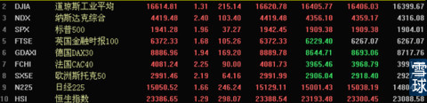
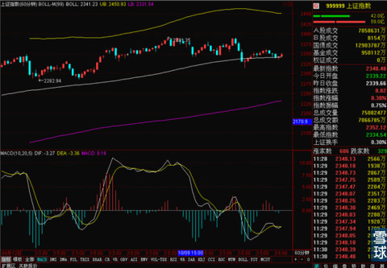
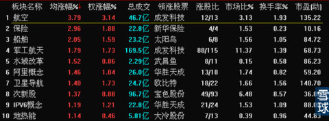

这几天可能都要天天泡在图书馆了，所以更新的有点少，还望大家见谅。今天早上起来看了一下外盘，看到外盘普涨之后，我就放心的来图书馆看书了。

因为只要昨天晚上外盘不暴跌，那么今天早上上证指数60分钟线BOLL中轨线下低开的可能性就非常小，只要60分钟线BOLL中轨守得住，之前预判的小双底和短期上攻就还有存在的可能性。现在主要是看指数能不能在现有位置横得住，等待60分钟线的MACD的黄白线走到0轴附近，如果是这样，那么大调整之前就还有机会。

昨天下午的下午的下跌是对三季度GDP增幅不到7.5%的一个反应，但是今天财经网站有开始强调虽然三季度GDP增速不足7.5%，但是市场之前的预期是7.2%----7.3%，实际报出来7.5%的话就是高于预期，是个好数据。所以对消息的解释权和利用根本就是掌握在市场主力手里。加上今天国资改革利好的释放和发改委对基建项目的批复。短期果然是有利好在对冲经济数据的不利和经济增速的放缓。
但是同时今天板块涨幅榜上关于基建的股票却没有什么动作，涨的好的都是一些前期暴涨过的股票。

所以我们可不可以假设这是市场主力在将前期热点借利好出货腻？
我个人还是比较坚持最近几日可能会上涨，但是后市比较惊人的调整随时会到来。前期热点那么高的涨幅和新热点的挖掘和切换都会在这次大调整中进行。
同时还有一个新的问题，就是现在不仅仅是宏观经济数据对大盘有严重影响。市场主力也在利用投资者对IPO的反感和警惕在进行操作。
行情回顾/
第一轮新股发行
批文发放日：6月9日
密集申购期：6月18日～24日(未考虑个别新股推迟发行)
首批冻结资金解冻日：6月23日
6月9日晚间，传闻已久的IPO重启终于落定，证监会[微博]正式宣布10家企业获得IPO批文。由于今年5月证监会已“定调”，称从6月到年底将再发行100只左右新股，所以在6月9日晚消息曝光后并未对之后A股市场造成冲击，6月10日，上证指数涨1.08%、中小板指(7851.326, 9.19, 0.12%)涨1.50%、创业板指涨2.05%。
然而，从新股申购的前一天即6月17日开始，A股遭遇连续3个交易日的剧烈调整，再现新股发行对A股市场的“抽血效应”。值得一提的是，就在股指大跌的同时，交易所回购利率疯狂飙升，6月18日，上证所1天期回购利率最高达30%，直观显示出资金面的紧张。
在6月17日～19日沪指三连跌后，虽然新股发行还在继续，但沪指从6月20日企稳回升，特别是在6月23日，伴随着首批6月18日发行的飞天诚信(138.620, -0.18, -0.13%)等4只新股申购资金解冻后，沪指反弹进一步持续。
第二轮新股发行
批文发放日：7月14日
密集申购期：7月23日～24日
首批资金解冻日：7月28日
首轮新股发行给市场带来的冲击出乎多数人意料，但也恰恰成为一个最具参考性的案例，直观反映出在新的发行节奏下，A股市场运行的所受影响的轨迹，即批文下发时无须担心行情下跌，申购后则有必要警惕下跌。
因此，在7月14日证监会发放新一批12家公司发行批文后，7月15日A股各大指数表现平淡，但不少机构纷纷提示新股发行可能带来的风险。在临近7月23日新股发行之前，7月16日～21日，市场再次陷入小幅调整中。
《每日经济新闻》记者注意到，相对于6月以来首轮新股发行时对市场造成明显冲击，7月下旬恰好处于沪指本轮反弹的开始阶段，大盘从7月22日开始即连续拉升，上证指数在7月23日~24日，表现依旧强势，但中小板指和创业板指却出现短暂调整。
直到7月28日，率先在7月23日发行的中材节能(15.69, 0.82, 5.51%)等5只新股申购资金解冻，A股反弹上演了一出 “空中加油”的好戏，7月28日，上证指数大涨2.41%，这一次的反弹一直持续到8月中旬第三轮新股发行曝光时。
第三轮新股发行
批文发放日：8月19日
密集申购期：8月28日至29日
首批资金解冻日：9月2日
有了前两轮新股发行经验，在8月19日第三批新股发行批文曝光第二天，整个市场依旧波澜不惊，但有更多机构开始提示新股发行前行情震荡的风险。《每日经济新闻》记者了解到，当时多家券商在晨会报告以及向客户发送的短信中，均明确提示风险。
似乎在意料之中，A股调整从临近新股发行的8月25日如期而至，并持续到8月28日。这一次的反弹从新股密集发行的第二天即8月29日出现，更在9月2日申购资金解冻推动下继续发力。8月29日～9月5日，上证指数区间最大涨幅超过6%。
第四轮新股发行
批文发放日：9月15日
密集申购期：9月24日～25日
首批资金结冻期：9月29日
如果说第一次案例出现让人疑虑，第二次出现会被认为是巧合，那么，第三次再次呈现相同局面，在新股批文下发次日，A股市场表现平淡已或多或少被视为一种规律。
正因为如此，当第四批IPO批文公布第二天，A股市场突如其来调整让不少认为摸到规律的投资者措手不及。
《每日经济新闻》记者注意到，9月16日A股市场出现的调整有着一些特殊背景，比如A股受到宏观经济数据不佳、纳斯达克指数大跌以及港股连续下挫的拖累。另外还需指出的是，由于在第三轮新股发行中，有3只因为估值原因推迟至9月18日～22日发行，而在9月24日～25日之间又集中发行了第四批次11只新股。因此，合计14只整装待发的新股，成为引爆当时市场悲观情绪的导火线。
从A股走势看，在9月16日调整后，9月17日～19日的3个交易日中持续小幅上涨，但是在尚未收复16日大跌失地的背景下，9月22日沪指大跌1.70%。不过，9月23日，第三批推迟发行新股的申购资金陆续解冻，股指再次开始回升，并在10月19日盘中触及2391.35点的阶段性新高。
在这一次反弹中，既经历了9月24日、25日11只新股密集发行的考验，也享受到了打新资金在9月29日和30日解冻的“福利”。
规律剖析/
分析人士认为，A股市场走势变化是多种因素、多方博弈的结果，大到重要政策出炉、核心经济数据曝光、国际形势变化，小到突发性焦点事件扰动、重量级企业动态，都有可能对短期走势造成影响，新股发行不是左右A股表现的唯一因素。
但不容否认的是，市场波动背后的推手是资金流动，而每一轮新股发行将对资金面造成的最直接的影响。因此，单独讨论新股发行与A股市场走势的关系，对投资者仍有参考价值。这种情况也是我们在关注宏观经济数据对指数影响的同时也应该注意到问题，一件事情在市场中反复出现相似情况，就应该暂时归结为规律性的存在予以对待。
 |
这几天可能都要天天泡在图书馆了，SaiLv 2014-10-22 12:33:10 |
Copyright © 1996-2014 SINA Corporation All Rights Reserved.